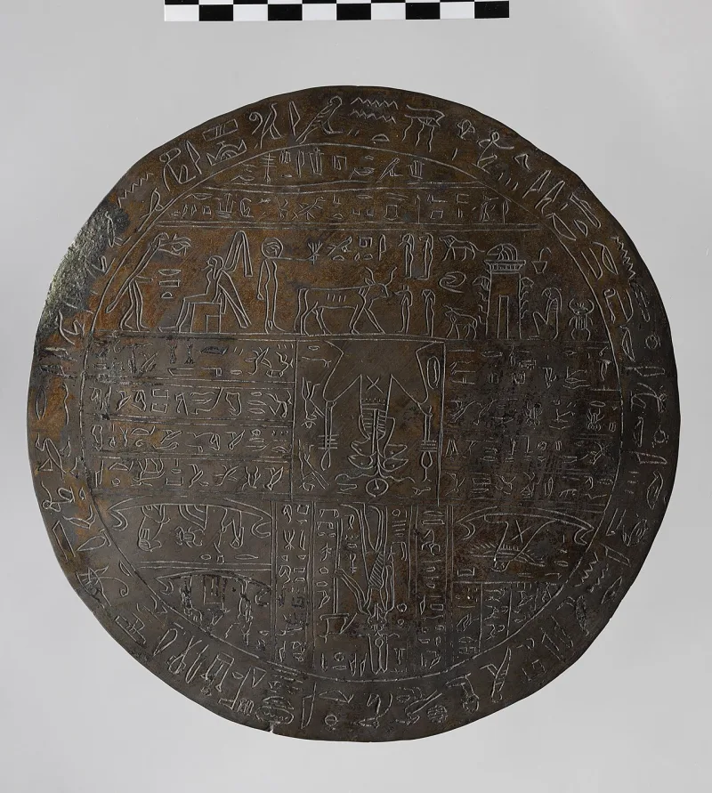
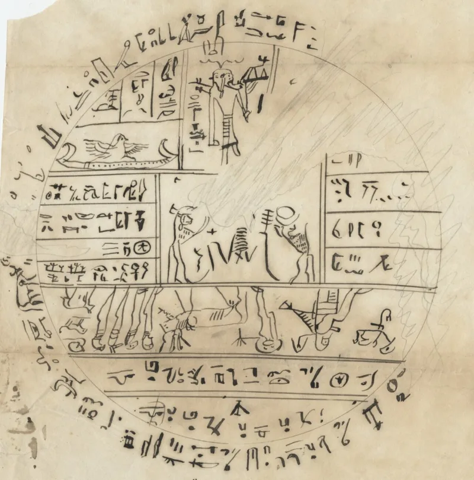
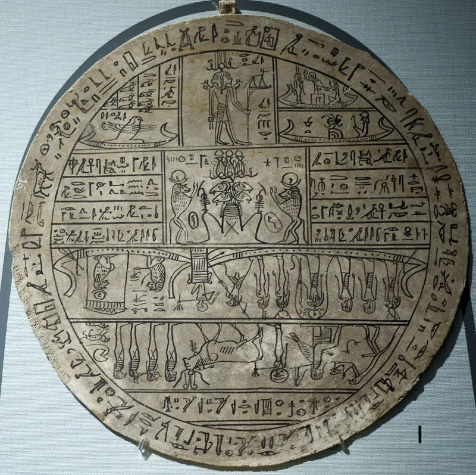

No good counter-argument has been published by LDS scholars.
A hypocephalus. That is a round funeral amulet, laid under the head of a mummy.
It comes from spell 162 of the Book of the Dead, and this one was made for a man named Sheshonq. Its purpose was to keep the dead warm and help them rise.
Cosmology. Figure 1 is "Kolob, signifying the first creation, nearest to the celestial, or the residence of God." Figure 5 is the sun, receiving light through a medium he calls Kae-e-vanrash.
Abraham 3:2-4 and 3:9 go with it.
Egyptologists all identify it as Min, a fertility god. He is shown seated, with an erect phallus and a raised flail, approached by a serpent.
Smith labelled it "God sitting upon his throne, revealing through the heavens the grand Key-words of the Priesthood." His explanation goes on: "as, also, the sign of the Holy Ghost unto Abraham, in the form of a dove."
Michael Rhodes is a Latter-day Saint scholar. His own translation of the rim and panels gives ordinary funeral prayers for Sheshonq.
Parts of the original were missing in 1842 and were filled in with characters copied from other papyri, including lines from Hor's Book of Breathings.
Rhodes, John Gee, Kerry Muhlestein and Pearl of Great Price Central grant that figure 7 is a form of Min. They argue three things.
To Egyptians, Min was a supreme creator god. He stood for the power that makes life.
So "God sitting upon his throne" may catch his role, even if the image startles us. Second, hypocephali are esoteric objects about cosmic geography and rebirth.
A cosmological reading is not alien to that genre. Some argue that figure 4, as the firmament, lands near an Egyptian idea.
Third, under the catalyst view, the explanations were never meant as decipherment at all.
"Even the church's own scholars say figure 7 is Min. What do you do with that?"



Min was a god who made life, and these amulets do carry cosmic meaning.
Latter-day Saint scholarship concedes that figure 7 depicts a form of Min. Rhodes, Gee, Muhlestein and Pearl of Great Price Central all grant it. They then argue three things.
First, Min was for Egyptians a supreme creator god. He stood for the power that makes life. So 'God sitting upon his throne' may catch the figure's role in Egyptian religion, even if the image shocks a modern reader.
Second, hypocephali are esoteric objects. They encode cosmic geography and rebirth. A cosmological reading is therefore not alien to the genre. A few of Smith's labels are argued to land near Egyptian ideas, such as figure 1 as the creative force at the centre, and figure 4 as the firmament.
Third, under the Semitic-adaptation and catalyst frameworks, the explanations were never meant as decipherment. They were inspired reuse, in the way Egyptian Jews reused pagan imagery.
Strong for you: their own scholars grant figure 7 is Min, and no rival reading exists.
There is no dispute about what figure 7 is. Their own sources name it as Min, shown with an erect phallus.
The dispute is only whether Smith's label can be rescued. Can 'God sitting upon his throne, revealing the grand Key-words of the Priesthood' be read as a fair gloss on a fertility god approached by a serpent? No Egyptologist reads one of these amulets as teaching Kolob, key-words, or the Holy Ghost.
Michael Rhodes is a Latter-day Saint scholar. His own reading of the rim and panels gives ordinary funeral prayers for Sheshonq.
Their case does not meet the translation evidence. It moves the explanations outside translation, which gives the point away.
Deuteronomy 18:21-22 and 1 Thessalonians 5:21 set the test. Smith said he translated by the gift and power of God. The checkable claims fail checking, and no rival translation has answered them.